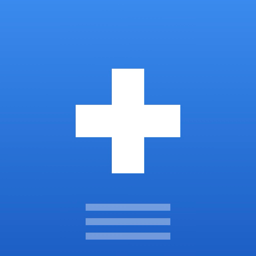

Una familia de apps para la guardia.
Una app por especialidad, en Mac, Windows, iPhone y iPad. Los datos viven en tu equipo, cifrados. Ninguna app da diagnósticos.
Menos tiempo copiando. Más tiempo con el paciente.
El residente pega los labs, R+ los ordena y la nota queda lista. Hacemos software que quita pasos a la guardia, sin decidir por el médico.
Mauricio Salas Garza
Fundador y desarrollador
drmauriciosalas@rmasclinical.app
Apps de escritorio
R+
Medicina Interna
Labs del portal, signos, balance y pendientes en cada expediente. La nota empieza llena.
R+ HF
Insuficiencia cardiaca
Seguimiento diario y resumen cardiológico por paciente, sobre la base de R+.
R+ Neumo
Neumología
Salas de UCI, interconsulta y consulta, con estudios pulmonares por paciente.
Lleva el censo contigo.
Apps nativas para leer censo, labs y signos. Capturas signos, glucosa y balance. Todo llega a tu Mac por la nube cifrada.

R+En desarrolloLínea de tiempo
Empieza R+
Primera versión para Medicina Interna: de los labs pegados al documento de la nota.
R+ 1.0.0, primera versión pública
Salen siete versiones el mismo día. Desde ahí, R+ se publica cada pocos días.
R+ 2.0, 3.0 y 6.0
Versión 2.0 el 2 de mayo, 3.0 el 8 de mayo y 6.0 el 25 de mayo.
R+ 7.0
Primera versión de la serie 7.
R+ 8.0
Comienza la serie 8, la serie actual de R+.
R+ 8.4.0
Más de 180 versiones publicadas desde abril.
R+ 8.5.0 disponible
Para macOS y Windows. Labs del portal, resumen por cama y entrega de guardia entre compañeros.
R+ HF, R+ Neumo y apps de iPhone y iPad
Cardiología, Neumología y una app nativa para cada una.